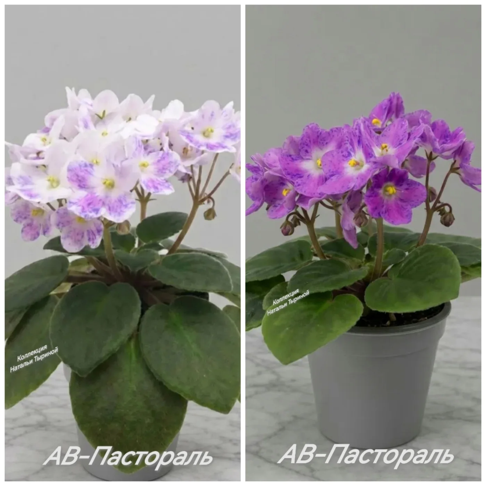

Фиалки уникальны тем, что даже один лист, взятый с одного растения, может дать начало совершенно разным экземплярам.
Существует два ключевых понятия — сорт и спорт. Давайте разберемся, что это такое и как из одного листочка получаются разные растения.
Что такое сорт?
Сорт — это растение с устойчивыми характеристиками, которые соответствуют описанию, данному селекционером. Когда вы покупаете лист сортовой фиалки, вы ожидаете, что выращенное из него растение будет иметь те же признаки:
· такую же форму и окраску цветов;
· такой же тип розетки;
· такие же листья (форма, окраска, наличие пестролистности).
Сортовые признаки закреплены генетически и передаются при размножении листовыми черенками и пасынками.
Что такое спорт?
Спорт (от англ. SPORT - отклонение) — это растение, которое утратило часть сортовых признаков или изменило их. При размножении листом от сортовой фиалки может вырасти фиалка с другими цветами или листьями.
Почему возникает спорт?
1. Генетическая нестабильность.
Некоторые сорта (особенно фантазийной окраски, химеры) генетически нестабильны. Их признаки с трудом закрепляются в потомстве.
2. Мутации.
В клетках листа могут происходить спонтанные изменения.
3. Влияние внешних условий. Иногда стресс (жара, недостаток света) может спровоцировать временное изменение окраски, но если изменение закрепилось на генетическом уровне и передается следующим поколениям — это спорт.
Примеры спорта:
· Вместо махровых бело-голубых цветов выросли простые голубые.
· Исчезла пестролистность, листья стали полностью зелеными.
· Фантазийный горошек на цветах пропал, и они стали однотонными.
Как с одного листа получаются разные растения?
Это самый интересный момент! Когда вы срезаете лист сортовой фиалки, его ткань содержит множество клеток. Генетически эти клетки могут быть неоднородны. Особенно это характерно для:
· Химер.
У химер окраска цветка обусловлена двумя разными слоями тканей. При размножении листом эти слои перемешиваются, и химера "распадается" на исходные цвета. Поэтому химеры размножают только пасынками или цветоносами, сохраняющими структуру тканей.
· Фантазийных сортов.
Сорта с крапом, горошком, штрихами очень часто дают спорт. Крап может исчезнуть, превратившись в однотонный цвет.
· Пестролистных сортов.
Лист может дать детку как с пестрыми листьями (сорт), так и с полностью зелеными (спорт).
Что делать со спортом?
Спорт — это не всегда плохо! Иногда спорт оказывается настолько красивым, что его начинают размножать как новый сорт. Многие известные сорта изначально были спортами от других фиалок.
· Если спорт вам нравится — оставьте его в своей коллекции и выращивайте,обязательно подписывая, что это спорт.
· Если спорт вам не нравится (например, потеряна махровость или пестролистность) — от него можно избавиться, так как он уже не вернется в сортовую форму.
Но, не торопитесь делать вывод при первом цветении фиалки,оно,как правило, не является показательным.
Дождитесь второго цветения, когда фиалка раскроет весь свой потенциал. Тогда будет ясно, что это - сорт ли спорт.
Так что, сажая листик фиалки, вы всегда играете в небольшую генетическую лотерею. И будьте готовы, что фиалка вам может преподнести сюрприз.
Вот такая она ветреная, изменчивая, непостоянная, капризная... 🤷
Фиалка (сенполия) - существительное, женский род
images: ["images/сорт-спорт.webp"]
},
{
tag: "Сорта",
title: "ПУТЕШЕСТВИЕ ФИАЛКИ",
short: "Изменчивость окраски фиалки",
text: Вот классический пример изменчивости окраски цветков под влиянием условий среды (чаще всего температуры или pH почвы), а не генетического различия сорта.
У многих фиалок — пигменты, отвечающие за синие, фиолетовые и розовые тона — меняют структуру при разной температуре в период бутонизации.
Как это работает у одного сорта:
-прохладный период (до цветения): чаще формируются синие, фиолетовые, тёмные тона. Пигмент стабильнее.
- тёплый период (до цветения): окраска смещается в розовую, красную .
Пигменты могут разрушаться или синтезироваться хуже.
Если одно генетическое растение разделить и держать в разных температурных условиях (например, один в прохладе — +18…+20 °C, другой в тепле — +25…+28 °C), цветки будут отличаться по насыщенности и оттенку фиолетового/синего/розового спектра. При этом форма цветка и размер останутся одинаковыми.
Вывод: Разный цвет у фиалок одного сорта при разной температуре — норма, а не брак. И, если описание селекционером данного сорта держится в пределах нормы, то это явление - температурная изменчивость и фиалка считается температурозависимой, а не спортом.
